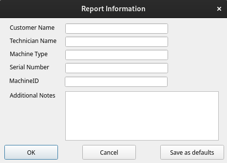

|
Report Information (Machine Identity and Additional Notes) |
Top Previous Next |
|
The fields in this section allow the entry of customer specific information for the system under test. This information is used in the Customer Test Certificate report. See Preparing a Customer Test Certificate for more information about configuring a test certificate for your company.

The information entered into this window will be displayed in saved result files, in the main window and on printed results. You can display this window automatically at startup by running BurnInTest with the command line parameter "-M".
Customer Name The name of the Customer you are testing the system for.
Technician Name The name of the tester.
Machine Type Typically the make and model of the machine would be entered in this field, e.g. Dell Dimension T800 XPS
Serial Number Typically the serial number would be entered here, e.g. D345-789-YT99
Additional Notes This is a spare text field that users may make use of to save any additional information that needs to be associated with the machine being tested or the organization doing the testing. No more than 300 characters may be entered into this field.
Save As Defaults This button will save the contents of these three fields to disk. Each time BurnInTest starts the fields will automatically be reloaded. This can save retyping the same information over and over again.
|